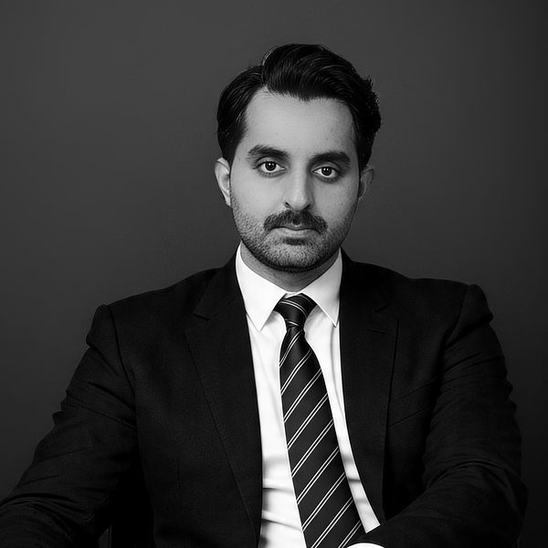
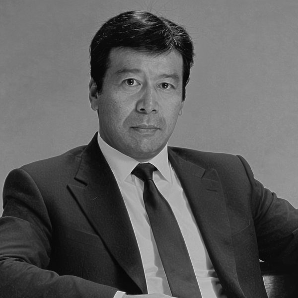
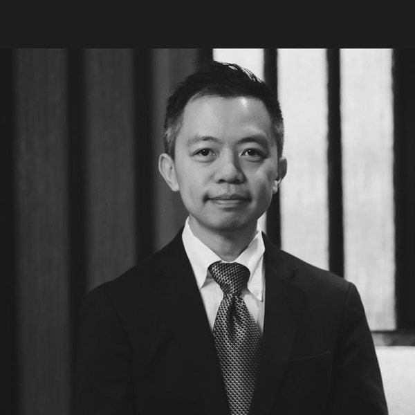
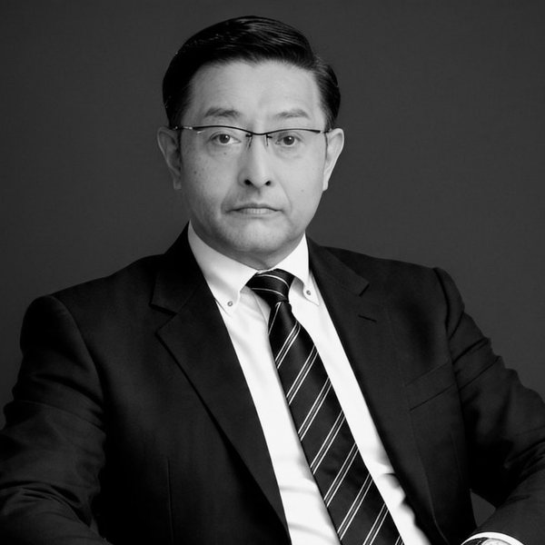
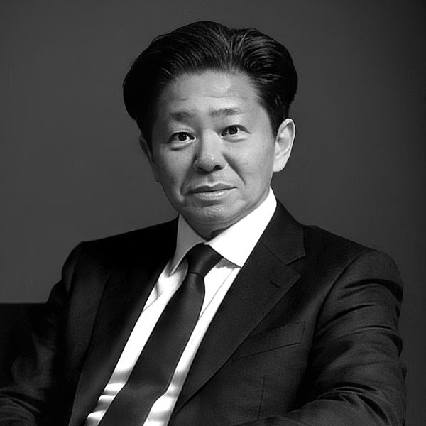
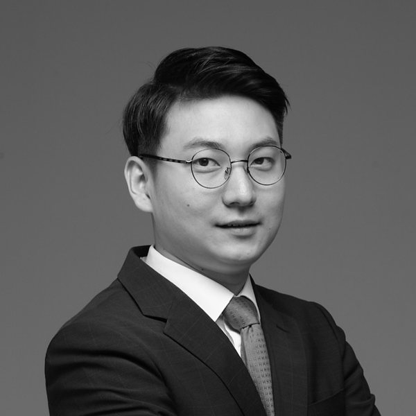

Corporate overview, story, and the deliberate choice of Tokyo as home.会社概要、沿革、そして東京を拠点とする意図的な選択について。
Read more →詳しく見る →Five interconnected areas across Asia: commercial real estate, hospitality, real asset equity, digital infrastructure, and renewable energy assets.アジア全域における五つの領域：商業不動産、ホスピタリティ、実物資産エクイティ、デジタルインフラ、再生可能エネルギー資産。
Read more →詳しく見る →Founding principles. Tokyo base. Expansion in line with the work.創業理念。東京を拠点に。取り組む仕事に沿った拡充。
Read more →詳しく見る →Every choice is considered, documented, and revisited. Process is our protection.
すべての選択は、熟慮され、記録され、繰り返し見直されます。プロセスこそが我々の護りです。
Our communication is direct. Our presence is deliberately understated. The outcome is the statement.
対話は直接的に、存在は意図的に控えめに。語るべきは成果そのものです。
Value compounds over long horizons. Patience is the discipline to wait for the right work.
価値は長い時間をかけて積み重なります。忍耐とは、正しい仕事を待つための規律です。
Nearly a decade of direct presence in the Japanese market. The relationships and networks that underpin execution cannot be wired in.
日本市場における、約10年にわたる直接的な存在。執行を支える関係性とネットワークは、資本だけでは築けません。
SYQA Capital was established in June 2021 in Tokyo. The choice of home was deliberate. Japan's capital markets, engineering culture, and long-cycle thinking shape how we work — and form the foundation from which we operate across Asia.
We are Asia-focused with Japan at the core. Japan is our home, our primary market, and the anchor of our deal flow. Tokyo is the operating seat; Seoul extends our coverage into North Asia and the Japan–Korea corridor. From this base, we engage across the broader Asian region — selectively, and only where our capabilities translate.
Our approach favours depth over breadth, careful selection over broad activity, and relationships that compound over time. We build patiently. We operate transparently. We hold a long view.
The firm is deliberately narrow in scope, deep in capability, and unhurried in its growth.
SYQA Capitalは、2021年6月に東京で設立されました。拠点の選択は意図的なものです。日本の資本市場、工学文化、長期的思考が、我々の仕事のあり方を形づくり、アジア全域での活動の基盤となっています。
我々はアジアを軸とし、日本を中核に据えます。日本は我々の拠点であり、主要市場であり、案件発掘の起点です。東京を運営拠点とし、ソウルを通じて北アジアおよび日韓回廊をカバーします。この拠点から、より広いアジア地域で — 選択的に、そして我々の能力が活きる領域においてのみ — 関与します。
我々のアプローチは、広さよりも深さ、広範な活動よりも慎重な選択、そして時間とともに価値を積み重ねる関係性を重視します。忍耐強く築き、透明性をもって運営し、長期的な視座を持ちます。
会社は意図的に、対象を絞り込み、深い能力を持ち、急がぬ成長を旨とする設計としています。
SYQA Capital was incorporated in June 2021. The firm, however, rests on foundations built well before.
Nearly a decade of direct presence in the Japanese market: relationships cultivated with operators, developers, counterparties, and local execution teams. The kind of access that institutional capital alone cannot purchase, and that remote allocators cannot replicate from a distance.
This groundwork is not a marketing claim. It is the practical reason SYQA can source, structure, and execute opportunities in Japan that are not realistically available through conventional channels. The firm's approach — selective, patient, and disciplined — is possible because the access underneath it already exists.
The vehicle is new. The ecosystem is not.
SYQA Capitalは、2021年6月に設立されました。しかし、会社の基盤は、それ以前から長い時間をかけて築かれています。
日本市場における、約10年にわたる直接的な存在 — 事業者、開発者、カウンターパーティ、そして現地の実行チームとの間で培われた関係性です。それは、資本だけでは購入できず、遠隔の投資家が距離を隔てて再現することができない種類のアクセスです。
この基盤はマーケティング上の主張ではありません。従来のチャネルでは現実的に得られない機会を、日本において発掘し、構造化し、執行することを可能にする、実践的な理由です。会社の姿勢 — 選択的で、忍耐強く、規律ある — は、その下にあるアクセスが既に存在するからこそ成立しています。
ビークルは新しい。エコシステムは、そうではありません。
Every choice is considered, documented, and revisited. Process is our protection. Discipline is measured as much in what does not happen as in what does.
すべての選択は、熟慮され、記録され、繰り返し見直されます。プロセスこそが我々の護りです。規律とは、行動したことと同様に、行動しなかったことによっても測られます。
Our communication is direct. Our presence is deliberately understated. The outcome is the statement — not the story around it.
対話は直接的に、存在は意図的に控えめに。語るべきは成果そのものであり、その周囲の物語ではありません。
Value compounds over long horizons. We move carefully, favouring durable outcomes over quick ones. Patience is not passivity — it is the discipline to wait for the right work.
価値は長い時間をかけて積み重なります。我々は慎重に動き、速さよりも持続性を重視します。忍耐とは受動ではなく、正しい仕事を待つための規律です。
Nearly a decade of direct presence in the Japanese market. The relationships, local execution teams, and on-the-ground intelligence that underpin our work cannot be wired in. Proximity is not a line in a pitch — it is the foundation beneath the firm.
日本市場における、約10年にわたる直接的な存在。我々の仕事を支える関係性、現地の実行チーム、現場の知見は、資本だけでは築けません。近接性は、資料上の一行ではなく、会社の根底にある基盤です。
Five areas across Asia, one standard of work.アジアにおける五つの領域、一つの基準。
Read more →詳しく見る →Founding principles. Tokyo base.創業理念。東京を拠点に。
Read more →詳しく見る →Direct, considered conversation.直接的で、熟慮された対話を。
Read more →詳しく見る →Japan is one of the few developed real-assets markets where positive carry remains available. Japanese corporate and institutional balance sheets are releasing real estate at scale, driven by governance reform, portfolio rationalisation, and generational transition.
We favour enduring fundamentals — locations with lasting demand, buildings with sound architectural and operational bones, and markets where patient capital finds natural advantage. Our approach is operational, not financial: we look for assets comfortable to hold through cycles, and pass on opportunities that rely on short-term tailwinds to work.
Expressed through office-to-residential repositioning, corporate disposition, retail redevelopment, and value-add mixed-use.
日本は、プラスのキャリーが引き続き得られる、数少ない先進国の実物資産市場の一つです。ガバナンス改革、ポートフォリオ再編、世代交代によって、日本の事業法人および機関投資家のバランスシートから大規模に不動産が放出されています。
我々が重視するのは、持続的なファンダメンタルズを持つ立地です — 長く続く需要、建築的・運営的に健全な建物、そして忍耐強い資本が自然な優位性を見出す市場。我々のアプローチは運営的であり、金融的ではありません。サイクルを通じて保有することに安心できる資産を探し、短期的な追い風に依存する機会は見送ります。
オフィスから住宅への転換、法人放出、小売再開発、バリューアッド型複合用途を通じて表現されます。
Japanese hospitality has matured as a thesis. We treat hospitality as a secondary, deeply selective allocation — deployed where pricing, operator alignment, and asset-specific repositioning logic continue to support institutional underwriting.
Not a macro tourism trade. A disciplined allocation where asset, operator, and location meet the standard. Acquisition paired with repositioning and an aligned operator. Mid-market and lifestyle positions in gateway Japanese markets.
日本のホスピタリティはテーマとして成熟しました。我々はホスピタリティを二次的な、深く選択的な配分として扱います — 価格、オペレーターとの整合性、資産固有のリポジショニング論理が、機関投資家水準の審査を引き続き支える領域に限って展開します。
マクロ観光トレードではありません。資産、オペレーター、立地が基準を満たす、規律ある配分です。取得はリポジショニングと整合的なオペレーターと組み合わされます。日本のゲートウェイ市場におけるミッドマーケットおよびライフスタイル・ポジション。
Equity positions in Japanese companies whose cashflows derive from real-asset-adjacent operations: hospitality platforms, logistics operators, real-estate holding companies with institutional portfolios.
The expression is narrow by design. Exposure is restricted to situations where underlying economics behave like real assets — contracted cashflows, identifiable asset backing, proprietary origination. Access is routed through SYQA's cross-border relationships, not commoditised channels.
Situations are frequently shaped by Japanese governance reform, generational transition, or activist pressure, where real assets are surfaced through equity windows. Not a venture sleeve.
キャッシュフローが実物資産隣接の事業から生じる日本企業へのエクイティ・ポジション — ホスピタリティ・プラットフォーム、物流事業者、機関投資家向けポートフォリオを有する不動産保有会社。
表現は意図的に狭く設計されています。エクスポージャーは、基礎的経済が実物資産のように機能する状況に限定されます — 契約されたキャッシュフロー、特定可能な資産による裏付け、独自の案件発掘。アクセスは、コモディティ化されたチャネルではなく、SYQAの国境を越えた関係性を通じて行われます。
こうした状況は、日本のガバナンス改革、世代交代、またはアクティビスト圧力によって形成されることが多く、実物資産がエクイティという窓口を通じて表面化するものです。ベンチャー領域ではありません。
Data centres, fibre, and adjacent operating-asset platforms supporting the structural increase in compute demand across Japan and gateway Asian markets. The investment case rests on long-duration contracts with creditworthy counterparties, secured land and grid access, and operating partners with delivery history.
We approach digital infrastructure as a real-asset class — anchored by physical sites, contracted cash flows, and operational discipline — not as technology venture. Construction, permitting, and grid risk are managed up front; exposure is sized to where these can be priced honestly.
Single-site equity, platform-level participations, and selectively, anchor positions in sponsor-led vehicles with aligned operators.
日本およびアジアの主要市場における、計算需要の構造的な増加を支えるデータセンター、光ファイバー、および関連する稼働資産プラットフォーム。投資判断は、信用力のあるカウンターパーティとの長期契約、土地と電力系統の確保、ならびに実績のある運営パートナーに支えられます。
デジタルインフラを、テクノロジー・ベンチャーではなく実物資産として捉えます — 物理的拠点、契約に基づくキャッシュフロー、運営規律に裏付けられた領域です。建設、許認可、電力系統に関わるリスクは事前に管理し、これらを誠実に評価できる範囲においてエクスポージャーを取ります。
単一資産へのエクイティ、プラットフォーム単位での参加、および選択的に、整合的な運営者を擁するスポンサー主導ビークルにおけるアンカー・ポジション。
Operating-stage solar, wind, and adjacent renewable energy assets in Japan and selectively across Asia. We seek established generation history, long-duration offtake or feed-in arrangements with reliable counterparties, and clear pathways to refinancing or repowering.
Pre-development greenfield risk is avoided. Permitting status, grid interconnection, and operational complexity are treated as the primary underwriting questions, not the marketing story.
Direct equity in operating assets, secondary acquisitions of operating portfolios, and selectively, repowering and re-contracting situations where the upside is operational rather than speculative.
日本および選択的にアジアにおける、稼働段階の太陽光、風力、および関連する再生可能エネルギー資産。確立された発電実績、信頼できるカウンターパーティとの長期オフテイクまたは固定価格契約、ならびに借換えやリパワリングの明確な道筋を有する資産を選好します。
開発前段階のグリーンフィールド・リスクは回避します。許認可の状況、電力系統への接続、運営の複雑性を — マーケティング上の物語ではなく — 審査の主要な論点として扱います。
稼働中資産への直接エクイティ、稼働中ポートフォリオの二次取得、および選択的に、優位性が投機的ではなく運営的である領域でのリパワリングと再契約の機会。

Founder of SYQA Capital. Representative Director of the Tokyo operating entity. Responsible for platform architecture, capital formation, investor relationships, and cross-border structuring across the Gulf–Japan corridor.
SYQA Capital創業者。東京の事業会社の代表取締役。プラットフォーム設計、資本形成、投資家関係、そして湾岸–日本回廊における国境を越えた構造化を担う。

Over forty years in Japanese capital markets and institutional real estate. Former senior executive at Nomura. Former Chief Executive Officer of Mori Trust Asset Management. Contributes deep institutional relationship weight across Japanese corporate, banking, and sovereign-adjacent counterparties.
日本の資本市場および機関投資家向け不動産において40年以上の経験。野村證券元シニアエグゼクティブ。森トラスト・アセットマネジメント元最高経営責任者。日本の事業法人、銀行、ソブリン関連のカウンターパーティにおいて、深い機関投資家としての関係性を有する。

Senior adviser with deep cross-border Asian transaction and institutional structuring experience. Contributes judgment on Japan and pan-Asian corridor transactions, counterparty assessment, and structuring discipline.
国境を越えたアジアの取引および機関投資家向け構造化における豊富な経験を持つシニアアドバイザー。日本および汎アジア回廊の取引、カウンターパーティ評価、構造化規律に関する判断力を提供する。

Senior operator in Japanese residential and commercial real estate markets. Brings transaction discretion, counterparty relationships, and executional judgment across prime real estate segments. Central to the firm's commercial real estate sourcing.
日本の住宅および商業不動産市場における上級オペレーター。プライム不動産セグメントにおける取引上の慎重さ、カウンターパーティとの関係、執行判断力を有する。会社の商業不動産発掘の中核を担う。

Responsible for taking underwritten transactions through to closing and post-acquisition oversight: legal coordination, debt arrangement, operating-partner alignment, and milestone-gated capital deployment across the firm's pipeline.
審査を経た案件のクロージングおよび取得後の監督を担う — 法務調整、デットの手配、事業パートナーとの連携、そしてマイルストーン単位の資本投入をパイプラインを通じて管理する。

Fixed-income strategy, investment management, and business development across Korea's institutional financial sector. Senior roles at Hanwha Asset Management, Dunamu Investment Management, and Samsung Securities. Leads SYQA's North Asia coverage and cross-border Japan flows.
韓国の機関投資家向け金融セクターにおける債券戦略、運用、および事業開発。ハンファ・アセット・マネジメント、デュナム・インベストメント・マネジメント、サムスン証券でシニアポジションを歴任。SYQAの北アジア統括および国境を越えた日本向け資金フローを率いる。
For direct inquiries, please write to us at hello@syqacapital.com.直接のお問い合わせは、hello@syqacapital.com までご連絡ください。
This website provides general corporate information about SYQA Capital Co., Ltd., a company registered in Japan. It is informational only.
Nothing on this website constitutes an offer, solicitation, or recommendation to buy or sell any security, investment product, or financial instrument. SYQA Capital does not hold itself out as a registered financial instruments business operator under Japan's Financial Instruments and Exchange Act (FIEA), and no investment services are offered through this website.
Information on this website does not constitute investment, legal, tax, or other professional advice. Visitors should consult qualified professionals before making any decisions based on information presented here.
Any forward-looking statements reflect current expectations only. Actual outcomes may differ materially. SYQA Capital undertakes no obligation to update such statements.
This website does not use tracking cookies, analytics scripts, or third-party advertising. We collect no personal information from visitors browsing this site. If you contact us via email, any information you share is used solely to respond to your inquiry, handled in accordance with Japan's Act on the Protection of Personal Information (APPI), and not shared with third parties without your consent.
While we aim for accuracy, SYQA Capital makes no warranty as to the completeness or timeliness of information on this website and accepts no liability for any loss arising from reliance on its contents.
All content on this website — including text, typography, layout, and marks — is the property of SYQA Capital Co., Ltd. unless otherwise noted. Unauthorised reproduction is prohibited.
This website is operated from Japan. Any disputes arising in connection with this website shall be governed by the laws of Japan.
For questions relating to this notice, please write to hello@syqacapital.com.
© 2026 SYQA Capital Co., Ltd. All rights reserved.
本ウェブサイトは、日本国にて登記されたSYQA Capital株式会社に関する一般的な会社情報を提供するものです。情報提供のみを目的としています。
本ウェブサイト上のいかなる情報も、有価証券、投資商品、金融商品の売買の申込み、勧誘、または推奨を構成するものではありません。SYQA Capitalは、金融商品取引法（FIEA）に基づく金融商品取引業者としての登録を有しておらず、本ウェブサイトを通じた投資サービスの提供は行っておりません。
本ウェブサイト上の情報は、投資、法務、税務、その他の専門的助言を構成するものではありません。訪問者は、本サイト上の情報に基づく判断を行う前に、資格のある専門家にご相談ください。
将来予測に関する記述は、現時点の予測のみを反映しています。実際の結果は大きく異なる可能性があります。SYQA Capitalは、かかる記述を更新する義務を負いません。
本ウェブサイトでは、トラッキングクッキー、アナリティクス・スクリプト、第三者広告を使用していません。訪問者の閲覧に関する個人情報は収集しておりません。メールにてご連絡いただいた場合、お客様が共有された情報は、お問い合わせへの返信のみに使用し、日本の個人情報保護法（APPI）に従って取り扱い、お客様の同意なく第三者と共有することはありません。
正確性を期しておりますが、SYQA Capitalは本ウェブサイト上の情報の完全性または適時性について保証せず、その内容への依拠により生じたいかなる損失についても責任を負いません。
本ウェブサイト上のすべてのコンテンツ — テキスト、タイポグラフィ、レイアウト、マークを含む — は、特に記載のない限り、SYQA Capital株式会社に帰属します。無断転載を禁じます。
本ウェブサイトは日本国内から運営されております。本ウェブサイトに関して生じるいかなる紛争も、日本国法に準拠するものとします。
本事項に関するご質問は、hello@syqacapital.comまでご連絡ください。
© 2026 SYQA Capital株式会社。無断転載を禁じます。